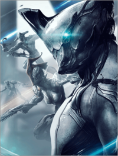
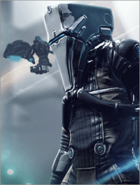
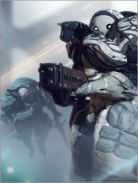
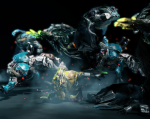
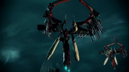
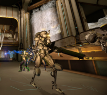

Hello there! Welcome to the world of Warframe, a futuristic MMORPG where the world has fallen into shambles and you are the only one who can save it! There are many thing you will need to know in order to survive the battles that will ensue, putting your every skill to the test. This guide will give you a quick head start as to what you will need to know. We will cover five important sections of the game, establishing a basis for the overall game and its contents.
For centuries, the Tenno have been asleep, frozen and lying in wait of release to once again save the world. However, unlike the way they remember it, the galaxy is now ruled by many factions, all at war for power.
| Faction | Description |
|---|---|
| Tenno | You are one of the Tenno, a descendant of the Orokin warriors. These brave souls, each equipped with suits of armor known as Warframes, are masters of combat, wielding any given weapon with precision and strength. The Orokin archives state that the Tenno were those who survived the Sentient onslaught, leaving them to fight for peace in their world, guided by their “mother,” known as Natah, or The Lotus. |
| Corpus | The Corpus are a merchant cult, bound by language and a common goal. This group seeks to obtain Orokin technology, specifically Warframes, and sell them. They are built upon machines, and have them amongst their ranks. Building many MOAs and Ospreys, this faction wields technology likely superior to any other. |
| Grineer | Lead by their Twin Queens, this group of soldiers have colonies all throughout the galaxy. The Grineer army is made up of clones, created with almost forgotten technology. Their crude but effective equipment makes them a threat to even the Tenno. The defects in their genes are due to the cloning, and they all bear some sort of deformity or problem. They are adept at combat in groups, and have the heaviest armor of all factions, besides the Tenno. |
| Infested | Created by the appropriately named "Infestation," the Infested can be of any faction, living or mechanical. Originally, the Infestation was used by the Orokin to fight the Sentients, but it quickly got out of hand, taking over creatures of any and all races and factions. However, the Tenno, due to their Warframes, are immune to the virus. One of them, Nidus, even controls the Infestation to fight his enemies. |
| Sentient | The Sentients are a group of machines from an entirely different Solar System, known as the Tau System. They are the closest thing to alien in this world, as even the Grineer are just deformed humans of sorts. They were likely made to be terraformers, but they gained sentience. These machines proceeded to wage war against their Orokin masters, the ones who learned to control them. Natah, or The Lotus, is presented as a Sentient as well. However, she defied her orders and refued the kill the Tenno, instead opting to become their “mother” after she became sterile, and she now leads them on their quest to liberate the world. |
| Orokin | The Orokin Empire, an ancient race of beings who waged war against the Sentients, were the most technologically advanced group to ever exist. During their Orokin Era, the technology they bore surpassed all that people have in modern times. They learned of a ritual which granted immortality, a process carried out by the Grineer Twin Queens, who are said to be of Orokin descent, or at least bear Orokin blood. In the game of Warframe, any item referred to as “Prime” or “Primed” means it is more powerful, or lorewise, from the Orokin Era. |
Now that you know the lore, it's time to begin! Choose the Warframe that you will start off with, and depart on your adventure! Remember to check all the sections of this guide!
The five types of Warframes...
The first three bosses you will face on your journey...
Impotant Mods and Weapons for your Tenno...
The different stages and progressions of the game...
The eight Syndicates in the world of Warframe...
All of my sources used to obtain information for this website...